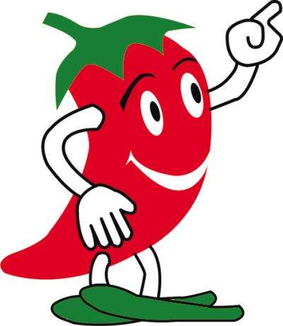
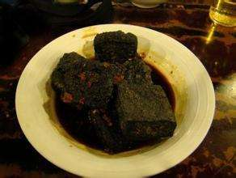
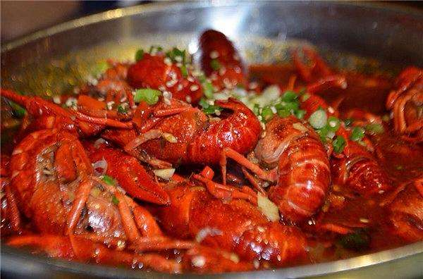
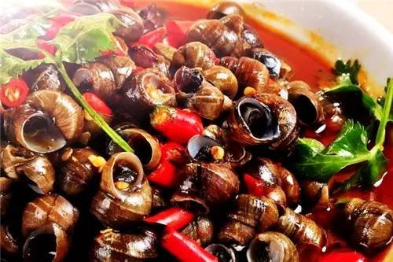

|  |
先来一张小吃合集解解馋 |
 （臭豆腐） |
长沙的臭豆腐要数百年老店火宫殿最有名，进火宫殿的人没有不吃臭豆腐 的。1958年，毛泽东到长沙视察时，还专门到火宫殿吃了一顿臭豆腐。火宫 殿的臭豆腐是用优质浏阳豆豉加冬笋、香菇、曲酒等煮制的卤水点成的，炸 好的臭豆腐外脆里嫩，再浇上辣椒油、香油、酱油等调料，非常好吃。 |
|
口味虾，又名麻辣小龙虾、长沙口味虾、香辣小龙虾等，是湖南省著名 的传统小吃，以小龙虾制成，口味辣鲜香，色泽红亮，质地滑嫩，滋味香 辣。20世纪末开始传遍全国，成为人们夏夜街边啤酒摊的经典小吃。 |
 （口味虾） |
 （嗦螺） |
|
当然，湖南的小吃还不止这些。
如果你玩累的了，不妨在街头稍作休息，一起来品尝这些美食吧！